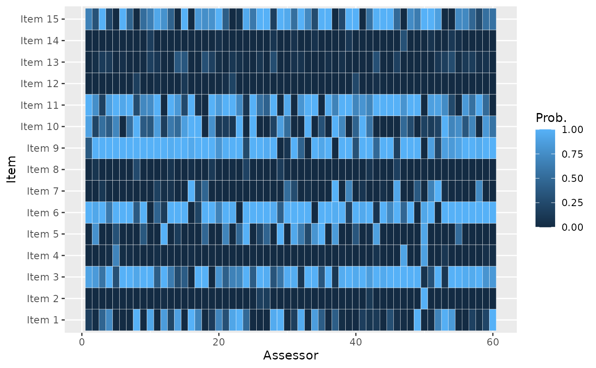
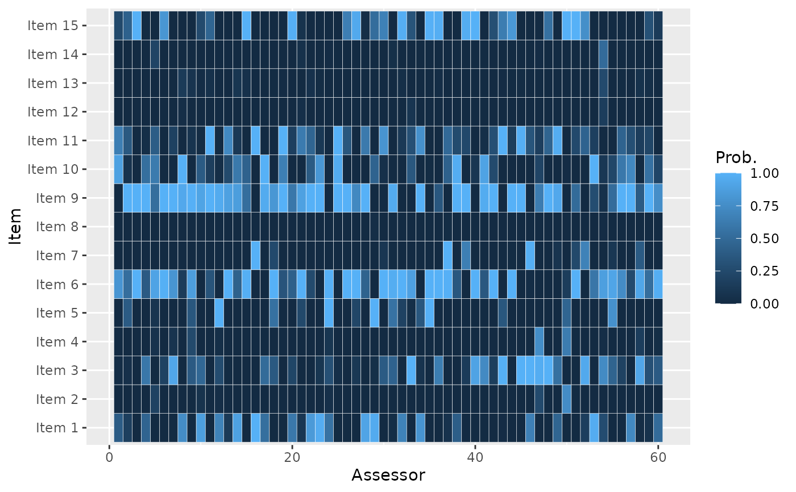

Plot the posterior probability, per item, of being ranked among the top-\(k\) for each assessor. This plot is useful when the data take the form of pairwise preferences.
Arguments
- model_fit
An object of type
BayesMallows, returned fromcompute_mallows().- k
Integer specifying the k in top-\(k\).
See also
Other posterior quantities:
assign_cluster(),
compute_consensus(),
compute_posterior_intervals(),
get_acceptance_ratios(),
heat_plot(),
plot.BayesMallows(),
plot.SMCMallows(),
plot_elbow(),
predict_top_k(),
print.BayesMallows()
Examples
set.seed(1)
# We use the example dataset with beach preferences. Se the documentation to
# compute_mallows for how to assess the convergence of the algorithm
# We need to save the augmented data, so setting this option to TRUE
model_fit <- compute_mallows(
data = setup_rank_data(preferences = beach_preferences),
compute_options = set_compute_options(
nmc = 1000, burnin = 500, save_aug = TRUE))
# By default, the probability of being top-3 is plotted
# The default plot gives the probability for each assessor
plot_top_k(model_fit)
# We can also plot the probability of being top-5, for each item
plot_top_k(model_fit, k = 5)

# We get the underlying numbers with predict_top_k
probs <- predict_top_k(model_fit)
# To find all items ranked top-3 by assessors 1-3 with probability more than 80 %,
# we do
subset(probs, assessor %in% 1:3 & prob > 0.8)
#> assessor item prob
#> 301 1 Item 6 1.000
#> 302 2 Item 6 0.866
#> 303 3 Item 6 0.998
#> 482 2 Item 9 0.892
#> 483 3 Item 9 1.000
#> 601 1 Item 11 0.854
# We can also plot for clusters
model_fit <- compute_mallows(
data = setup_rank_data(preferences = beach_preferences),
model_options = set_model_options(n_clusters = 3),
compute_options = set_compute_options(
nmc = 1000, burnin = 500, save_aug = TRUE)
)
# The modal ranking in general differs between clusters, but the plot still
# represents the posterior distribution of each user's augmented rankings.
plot_top_k(model_fit)
